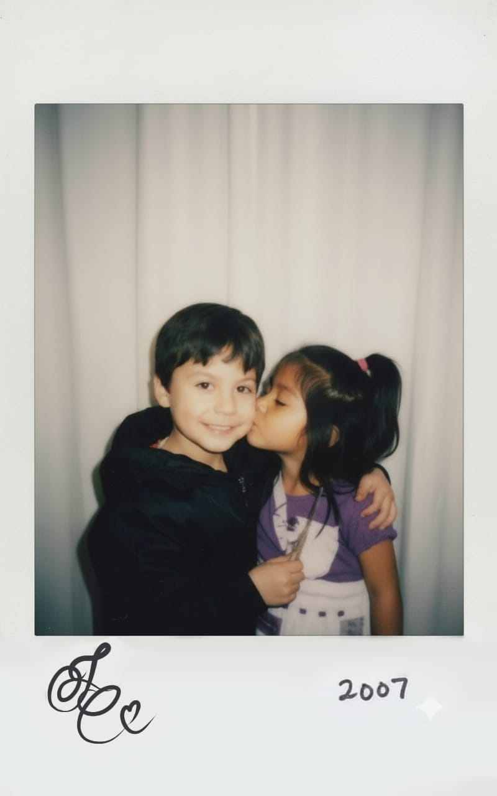
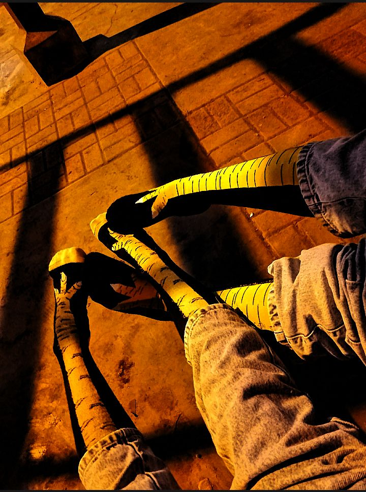

Amo cada tontería, beso y risa que me regalas, **mi cuchurrumin calato**. Esta es la prueba de nuestra locura, ¡y el inicio de muchos más recuerdos juntos!.

¡Nosotros, de niñitos! Un amor predestinado, incluso en versiones IA. 😍

¡Haciendo *match* con nuestras medias de patitas de pollo! Pequeños detalles, grandes amores. 🐔❤️
Nuestra forma romántica de decirnos "te quiero" mientras hacemos TikToks. ¡Siempre con tonterías!
Ella en mis piernas, el lugar más seguro del mundo, llenándome de besitos.
Cuando te cargo sin esfuerzo porque el amor me da la fuerza de un Hércules. 😉
Aquí costó un poco, ¡pero lo logramos! Siempre juntos, superando la gravedad. 💪
Amo besarte, sin importar si tenemos cara de perro, capibara o Ozzy Osbourne. 😅
Nuestro vals mareado de TikTok. Bailando hasta que se nos va la cabeza, y siempre terminamos en un beso. 💫
El recuerdo de esa vez que te dejé tirada en el piso y no pudimos parar de reír. Esas son las tonterías que atesoro. 😂